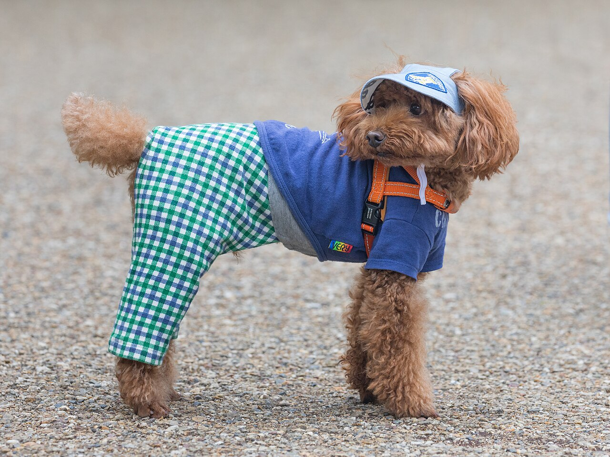
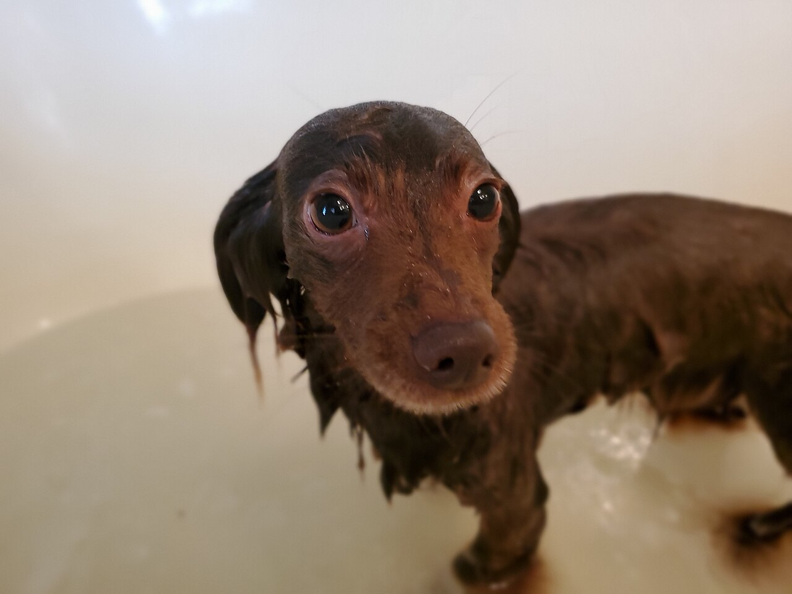
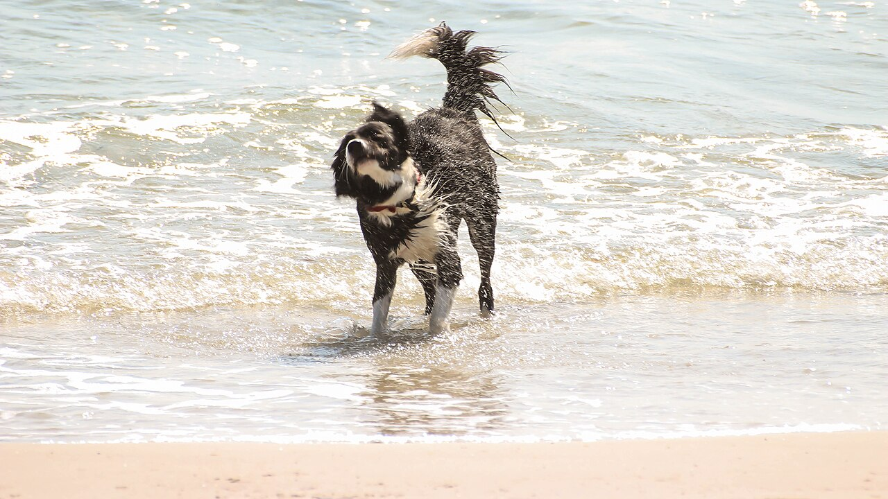

メニュー
ご案内の準備を進めています。

メニューと料金は準備中です。詳細はお問い合わせください。
項目名や内容は、確認でき次第ご案内します。
ご予約・ご相談
ご予約やご相談は、お電話またはInstagramから承ります。対応できる犬種、予約方法は準備中(お問い合わせください)。


写真はいずれもイメージです。
ご案内の準備を進めています。

メニューと料金は準備中です。詳細はお問い合わせください。
項目名や内容は、確認でき次第ご案内します。
ご予約やご相談は、お電話またはInstagramから承ります。対応できる犬種、予約方法は準備中(お問い合わせください)。


写真はいずれもイメージです。
写真はフリー素材のイメージです。店舗・施術の実際の様子ではありません。城陽市以外で撮影されたもの、撮影地が不明なものを含みます。